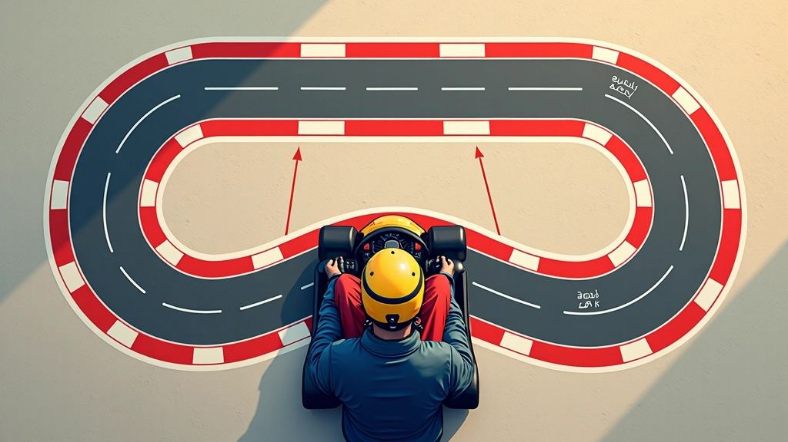
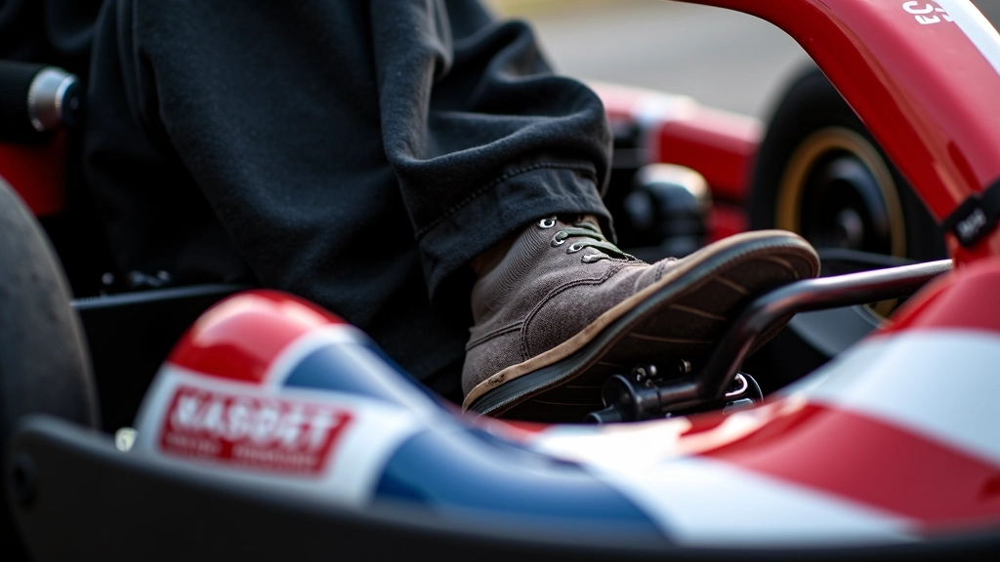
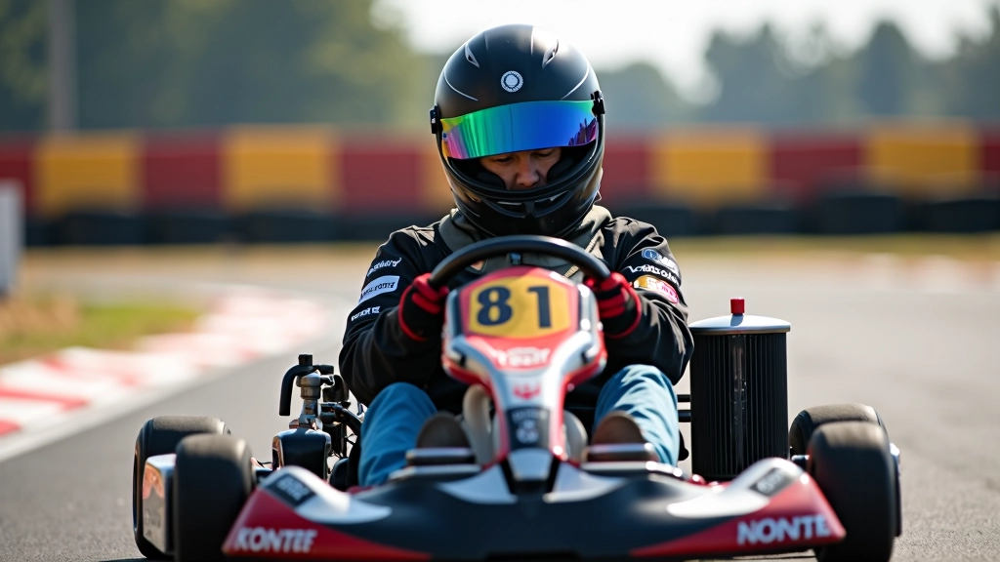

كيفية إيجاد نقطة الأبكس الصحيحة في المنحنيات
الأبكس ليس مجرد نقطة عشوائية. شرح عملي لكيفية اختيار الخط الأمثل الذي يسمح لك بتحسين سرعتك.
الكثير يكبحون في الوقت الخاطئ. هنا ستتعلم متى وأين تبدأ الكبح لتحقيق أفضل نتيجة ممكنة.


فريق التحرير والمراجعة
يُعدّ هذا المحتوى من قِبل فريق أبكس رايد التحريري، المتخصص في تقديم إرشادات عملية وسهلة الفهم حول تحسين أداء السباق.
الكبح ليس مجرد الضغط على الفرامل. الوقت والمكان والقوة — كل هذا يؤثر على سرعتك في المنحنى. إذا كبحت مبكراً جداً، ستفقد الوقت. وإذا كبحت متأخراً، قد تخرج عن المسار. هناك نقطة ذهبية محددة تماماً، وهذا ما نركز عليه هنا.
يعتمد التوقيت على عدة عوامل: سرعة دخولك للمنحنى، حدة المنحنى نفسه، وحالة الإطارات. كل كارت مختلف قليلاً، وكل مسار له خصائصه. لكن المبادئ الأساسية تبقى نفسها دائماً.

هذه هي المرحلة الأساسية. تبدأ الكبح قبل أن تدخل المنحنى بحوالي 20 إلى 30 متر — هذا يعتمد على سرعتك الحالية وحدة المنحنى. لا تنتظر حتى تصل للمنحنى نفسه. السباق ليس عن رد الفعل السريع، بل عن التخطيط المسبق.
عندما تكبح مبكراً، تعطي نفسك وقتاً كافياً لتقليل السرعة بشكل تدريجي وسلس. هذا يحافظ على توازن الكارت ويمنعه من الانزلاق. الكبح المفاجئ يسبب فقداناً للتحكم، خاصة على الإطارات الباردة.

الخطأ الشائع هو الكبح بقوة 100% ثم التوقف الفجائي. هذا خطأ كبير. الكبح الصحيح يحتاج إلى تدرج. تبدأ بضغط متوسط، ثم تزيد قليلاً عند الاقتراب من المنحنى، ثم تقلل الضغط قبل الدخول مباشرة.
هذا يُسمى "brake modulation" — التحكم الدقيق في قوة الكبح. إذا ضغطت بقوة في البداية وأفلتت فجأة، سيشعر الكارت بعدم الاستقرار. لكن إذا قللت الضغط بشكل تدريجي أثناء الاقتراب من المنحنى، ستحافظ على توازن أفضل وتدخل بسلاسة.
ابدأ الكبح على بُعد 25-30 متر. كبح خفيف إلى متوسط. يمكنك الحفاظ على سرعة أعلى نسبياً.
مثال: المنحنيات على أغلب المسارات الخارجية
ابدأ الكبح على بُعد 20-25 متر. كبح متوسط إلى قوي. تقليل السرعة أكثر قبل الدخول.
مثال: معظم المنحنيات على حلبة القطامية
ابدأ الكبح على بُعد 15-20 متر. كبح قوي. تقليل كبير في السرعة قبل الدخول مباشرة.
مثال: المنحنيات الضيقة جداً أو ذات 90 درجة
تنتظر حتى آخر لحظة ثم تضغط بقوة. هذا يسبب انزلاق الإطارات ويجعلك تخرج عن المسار. الحل: ابدأ الكبح مبكراً وبشكل تدريجي.
تضغط بقوة كاملة فجأة ثم تفلت. هذا يفقد الكارت توازنه. الحل: كبح تدريجي مع تقليل الضغط عند الاقتراب من المنحنى.
تكبح بينما أنت داخل المنحنى. هذا يزيد من احتمالية الانزلاق. الحل: أكمل الكبح قبل المنحنى، ثم اترك الفرامل واركز على التوجيه.
تستخدم نفس نقطة الكبح في كل لفة بغض النظر عن حالة الإطارات أو الطقس. الحل: اضبط نقطة الكبح حسب ظروف المسار الحالية.
التدريب هو المفتاح. لا تتوقع أن تتقن هذا في جلسة واحدة. ابدأ ببطء وركز على الاتساق. في كل لفة، حاول الكبح قليلاً أبكر من اللفة السابقة، لاحظ كيف يتغير أداء الكارت.
اختر منحنى واحد فقط للبدء. لا تحاول تطبيق كل شيء في نفس الوقت.
ركز على نقطة الكبح بالتحديد. ابدأ من 30 متر، ثم جرب 25 متر، ثم 20 متر.
لاحظ سرعتك عند دخول المنحنى. هل تشعر بالاستقرار أم بالانزلاق؟
اضبط تدريجياً حتى تجد النقطة المثالية لهذا المنحنى بالتحديد.
كرر نفس العملية مع منحنيات أخرى. ستبدأ في رؤية نمط عام.

عندما تشعر أنك أتقنت نقاط الكبح الأساسية، يمكنك الانتقال إلى مستوى أعمق:
تعلم كيفية معرفة ما إذا كانت الإطارات دافئة أم باردة. الإطارات الباردة تحتاج كبح أبكر وأخف. الإطارات الدافئة تسمح بكبح أقسى. هذا يأتي مع الخبرة والملاحظة الدقيقة.
حدد علامة واضحة على المسار (شجرة، علم، بقعة على الأسفلت) لتكون نقطة كبح ثابتة. هذا يساعدك على الاتساق اللفة تلو الأخرى.
الكبح الصحيح هو فقط النصف الأول. النصف الثاني هو كيفية تطبيق التسارع عند الخروج. إذا كبحت بشكل صحيح، ستكون في وضع مثالي للتسارع.
تابع تعلمك عن خط السباق والأبكس
الأبكس ليس مجرد نقطة عشوائية. شرح عملي لكيفية اختيار الخط الأمثل الذي يسمح لك بتحسين سرعتك.

الخروج من المنحنى بشكل صحيح هو ما يفرق بين الفائز والخاسر. تعلم كيفية تطبيق التسارع بشكل صحيح.

الخط الأمثل يعتمد على إعدادات سيارتك. اكتشف كيف يؤثر توازن وضبط الإطارات على أدائك.
تقنيات الكبح الصحيحة هي أساس السباق السريع. ما تعلمته اليوم — ابدأ الكبح مبكراً، استخدم ضغط تدريجي، وعدّل نقاط الكبح حسب المنحنى — هذه ستحسّن أدائك بشكل ملحوظ.
لا تتوقع النتائج الفورية. التدريب المنتظم والملاحظة الدقيقة هي ما ستجعلك أسرع. كل لفة تقودها هي فرصة لتحسين تقنيتك. استمع إلى ردود فعل الكارت — هو سيخبرك إذا كنت تكبح في الوقت الصحيح أم لا.
تذكر: أسرع السائقين ليسوا من يكبحون بأقسى قوة، بل من يكبحون بذكاء في الوقت والمكان المناسب.
المعلومات المقدمة في هذا المقال ذات طابع تعليمي بحت. نصائح تقنيات الكبح المذكورة هنا تستند على ممارسات سباق عامة وتجارب عملية. كل سائق والكارت له احتياجات مختلفة، وكل مسار له خصائصه الفريدة. ننصح بشدة باستشارة مدرب سباق متخصص قبل تطبيق أي تقنية جديدة، خاصة إذا كنت مبتدئاً. السلامة هي الأولوية الأساسية في أي نشاط رياضي.